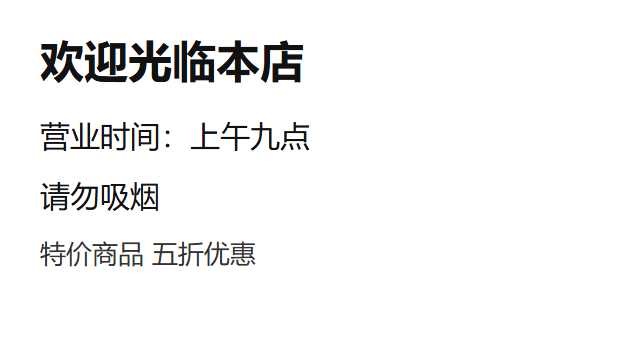

Hover Translate test fixture
Hover any paragraph below and hold Ctrl. Green notes say what should happen, red notes mark
things that must stay untouched.
Plain paragraphs, one per language
这是一段简体中文的测试文字。它应该被整段替换成英文，而不是逐字翻译。
これは日本語のテスト用の段落です。マウスを乗せて Ctrl を押すと、英語に置き換わるはずです。
Это тестовый абзац на русском языке. Он должен целиком превратиться в английский текст.
هذه فقرة اختبارية باللغة العربية. يجب أن تتحول بالكامل إلى نص إنجليزي.
Dies ist ein deutscher Testabsatz. Er sollte vollständig durch englischen Text ersetzt werden.
이것은 한국어 테스트 문단입니다. 마우스를 올리고 Ctrl 키를 누르면 영어로 바뀌어야 합니다.
Inline markup inside a paragraph
Le chat dort sur le canapé rouge depuis ce matin, et
personne ne ose le déranger.
The link must survive, still point at example.com, and its own text must be translated too.
The short <strong> is folded into the sentence for context, so it
loses its bold. A long inline run keeps its markup:
Der Bericht beschreibt eine ausführliche Untersuchung der Ursachen und schlägt
konkrete Maßnahmen vor.
Para instalar el paquete ejecuta npm install --save-dev vite en la carpeta del
proyecto, y luego reinicia el servidor.
The code span must come back byte for byte, in the right position.
Ecco il nostro logo  e accanto una nota1 a piè di pagina.
e accanto una nota1 a piè di pagina.
Image and superscript survive intact.
价格 ¥199 起，支持全国联保服务。
The span is short but carries a class, so it keeps its element and stays red.
Only bare formatting tags get folded into the sentence.
Consultez la documentation
pour les détails.
A wrapper chain keeps its inner span: the text is written into the deepest element.
Mixed script, where language detectors get it wrong
奥丁2掌机Odin2游戏机专用DOCK充电扩展坞支持4K60帧输出金属外壳
2026-07-18订单号: 3312870351913019697
奥丁2掌机 Odin2 DOCK 4K60
专用充电扩展坞
The last one is the nastiest: the Chinese sits inside styled spans, so the string
that carries the sentence is nothing but placeholders and brand names. Google detects that one as
"no". Judging the block by it alone is what made whole blocks vanish into "already English".
Mostly Latin letters and digits, but the Han characters settle it: this is not
English. Chrome's on-device detector says "en" for both. They must translate, not be skipped.
Nested span, so hovering the child must select the paragraph
Todo o texto deste parágrafo está dentro de dois spans aninhados.
Pointing at the inner text should still translate the whole paragraph exactly once.
Lists and tables
- Eerste punt van de lijst, met een paar woorden erbij.
- Tweede punt, dat los van het eerste vertaald moet worden.
Each list item is its own block. Hovering one must not touch its sibling.
| Nazwa | Opis |
|---|
| Kabel | Łączy urządzenie z zasilaniem. |
Cells translate one at a time, and the table layout does not shift.
Real world: an order row from a shopping site
Every tag has to survive: the disabled checkbox, and the date keeping its bold
create-time span. Only the text changes, each piece inside its own element.
A chat inside an iframe, the shape a support widget uses
不太明白您的意思
Ctrl over a message inside the frame translates that message, and only that
message. Mouse events go to the frame under the pointer, key events to the focused one, so this
only works if the frame the pointer is over is the one that acts. The innermost frame is two deep
and cross-origin to everything above it, which is the shape that used to be unreachable.
A frame with no URL of its own
srcdoc has no URL to match, so the content script only reaches it through
match_origin_as_fallback.
Images are read and painted over
Ctrl over the image reads its text and lays the translation over each line.
Ctrl again takes the overlay away. This icon has no words, so it reports finding none.

A real sign: every line should be covered by its own translated line.
Hostile layouts for the bilingual mode
价格199元起，全国联保
这一行设置了不换行和溢出隐藏，翻译文本必须仍然可读。
A flex parent would lay the added line out beside the text, and a nowrap and
overflow-hidden parent would clip it away. In both cases the translation has to end up on its own
readable line below the original.
Lines the page cuts to one width
A sidebar menu, sized for Chinese. The block is the div, but the box that clips
is the span inside it, and the English line is half as long again. In the replace modes the line
has to slide while the pointer is on it instead of staying behind the ellipsis. This row is 64px
tall for one 27px line, so a second line is room the page already had: set to grow, it wraps into
that slack and nothing on the page moves.
The same row, as tall as the one line it holds, which is how a sidebar is built.
Growing it would push everything below it down, so that is not room the page had spare and "only
if no space" has to slide this one.
Regions the page only says are hidden
A shop sidebar drawn expanded while its accordion still reports
aria-hidden="true". The words are on screen, so Ctrl over the row has to translate it. A dialog
marks the whole page behind it exactly the same way.
Things that must never be touched
// 这段代码在 pre 里面，绝对不能被翻译
const total = items.reduce((a, b) => a + b, 0);
A pre block is excluded outright: Ctrl over it does nothing.
★ ▲▼
Icon fonts and aria-hidden decoration are excluded.
Dieser Absatz trägt die Klasse notranslate.
notranslate and translate="no" are honoured.
Form fields are never rewritten.
Already English, and very long
This paragraph is already in English and should be detected as such, then left alone.
Ett mycket kort stycke.
Short text still works. Same-language text is skipped with a notice.
A selection, translated where it sits
选中这句话的一部分，只有被选中的文字会被替换，其余的保持原样不动。
Select part of this sentence, and only the words inside the selection
are replaced, leaving the rest of the line exactly as it was.
这是聊天输入框里的草稿，选中一部分再按快捷键。
Select some text and tap the quick key twice. The selection is replaced where it
sits and Esc puts it back. Which language it goes to follows the writing system it is in, so these
two go opposite ways. The last two are boxes you write in rather than passages you read: the
textarea holds no nodes at all, and the contenteditable pre is the shape Taobao's chat box has.
Neither is wrapped in anything, because a wrapper would be sent with the message.